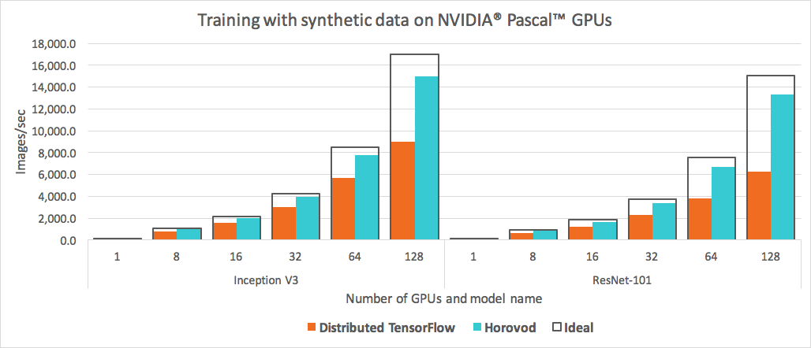

Brightics AccelAI
Brightics AccelAI is a service offering for Machine Learning and Distributed Deep Learning running on a cluster of GPU servers in a Data Center. AccelAI can be hosted on AWS, Azure, Google Cloud and on premises.
Here are the main benefits:
- Reduce Model Training from week(s) to hour(s) using Server GPU Clusters
- Distributed Training in TensorFlow and Keras using Google Parameter Server Technology
- Distributed Training in PyTorch and Tensorflow using Uber Horovod Technology
- Distributed and Scalable Inference API and Jobs for Tensorflow, Keras and PyTorch
- Distributed Data Transformation using Python & OpenCV (without Spark Knowledge)
- Automated Experiments with Hyper-Parameter Search using Grids
- Collaboration & Asset Sharing amongst Data Scientist & AI Engineering Team Members
- Jupyter based Multi-User and Multi-Tenant Environment using Kubernetes
- Scalability as shown below:

AccelAI API
AccelAI 1.6 Notebooks
AccelAI 2.0 Notebooks